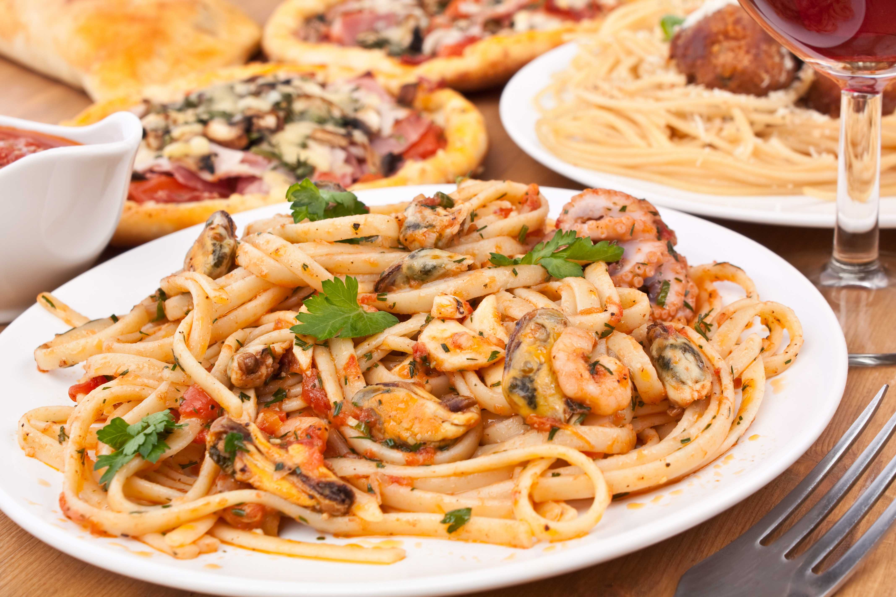
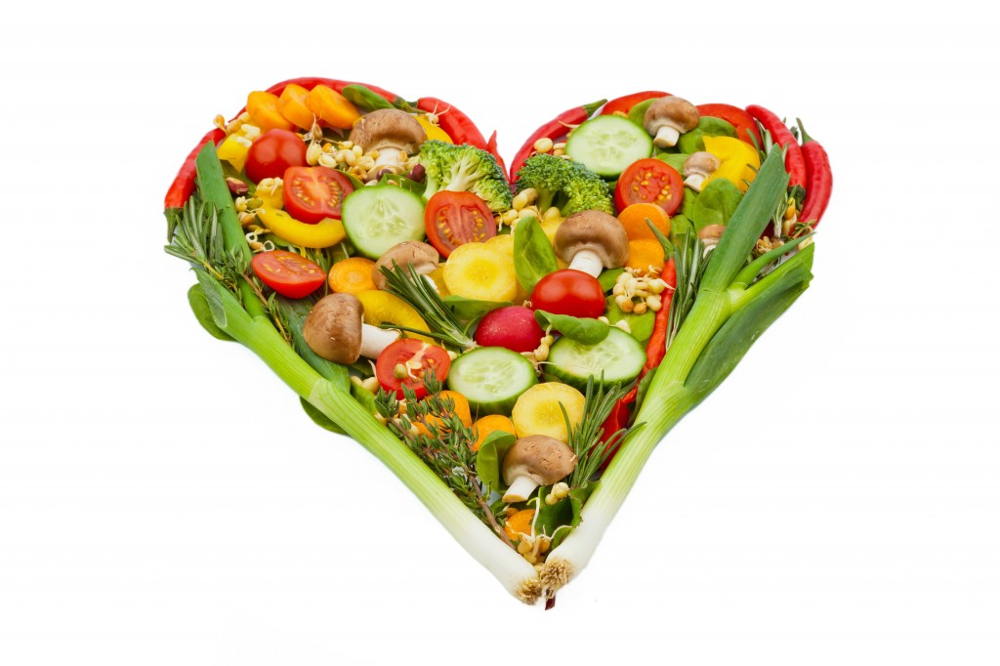
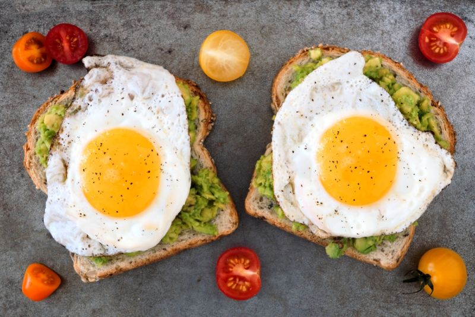

Acasa
GoOut
Preferinte Alimentare
Stil de viata

Retete culinare
Tocana de fructe de mare
Mousse de capsuni
Salata de ton

Retete culinare pentru cardiaci
Crap rasol cu legume
Crochete de gris cu carne
Placinta de mere

Retete culinare pentru diabetici
Pui cu ciuperci
Musaca de vinete cu dovlecei
Budinca de fructe de padure